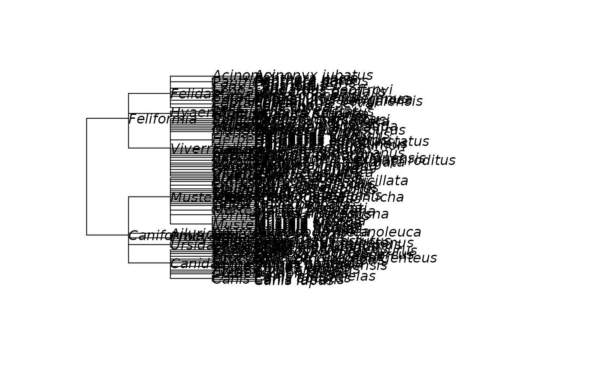

CI and RI compute the Consistency Index (CI) and Retention
Index (RI).
Arguments
- tree
a phylogenetic tree, i.e. an object of class
phylo.- data
A object of class phyDat containing sequences.
- cost
A cost matrix for the transitions between two states.
- sitewise
return CI/RI for alignment or sitewise
Details
The Consistency Index is defined as minimum number of changes divided by the number of changes required on the tree (parsimony score). The Consistency Index is equal to one if there is no homoplasy. And the Retention Index is defined as $$RI = \frac{MaxChanges - ObsChanges}{MaxChanges - MinChanges}$$
Examples
example(as.phylo.formula)
#>
#> as.ph.> data(carnivora)
#>
#> as.ph.> frm <- ~SuperFamily/Family/Genus/Species
#>
#> as.ph.> tr <- as.phylo(frm, data = carnivora, collapse=FALSE)
#>
#> as.ph.> tr$edge.length <- rep(1, nrow(tr$edge))
#>
#> as.ph.> plot(tr, show.node.label=TRUE)

#>
#> as.ph.> Nnode(tr)
#> [1] 83
#>
#> as.ph.> ## compare with:
#> as.ph.> Nnode(as.phylo(frm, data = carnivora, collapse = FALSE))
#> [1] 83
lab <- tr$tip.label
lab[79] <- "Herpestes fuscus"
tr$tip.label <- abbreviateGenus(lab)
X <- matrix(0, 112, 3, dimnames = list(tr$tip.label, c("Canis", "Panthera",
"Canis_Panthera")))
desc_canis <- Descendants(tr, "Canis")[[1]]
desc_panthera <- Descendants(tr, "Panthera")[[1]]
X[desc_canis, c(1,3)] <- 1
X[desc_panthera, c(2,3)] <- 1
col <- rep("black", 112)
col[desc_panthera] <- "red"
col[desc_canis] <- "blue"
X <- phyDat(X, "USER", levels=c(0,1))
plot(tr, "f", tip.color=col)
# The first two sites are homoplase free!
CI(tr, X, sitewise=TRUE)
#> [1] 1.0 1.0 0.5
RI(tr, X, sitewise=TRUE)
#> [1] 1.000 1.000 0.875